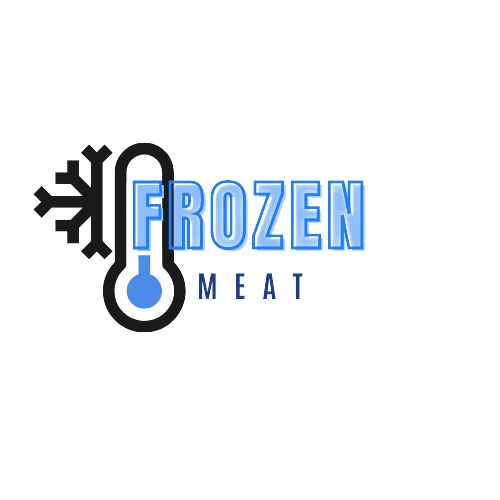
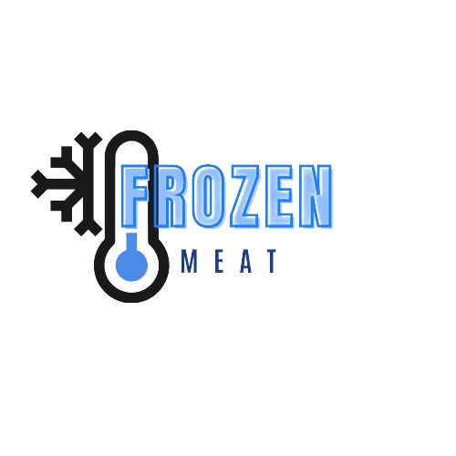

Frozen Maet

Olá, usuário

Frozen Maet


Você possui 100 frigoríficos sob monitoramento FrozenMeat.

50 sensores estão instalados nos caminhões de transporte Swift.

50 sensores estão instalados nos frigoríficos das lojas Swift.